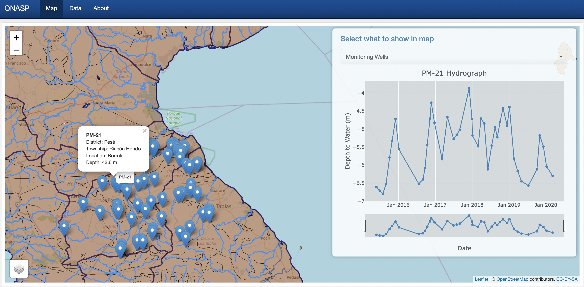
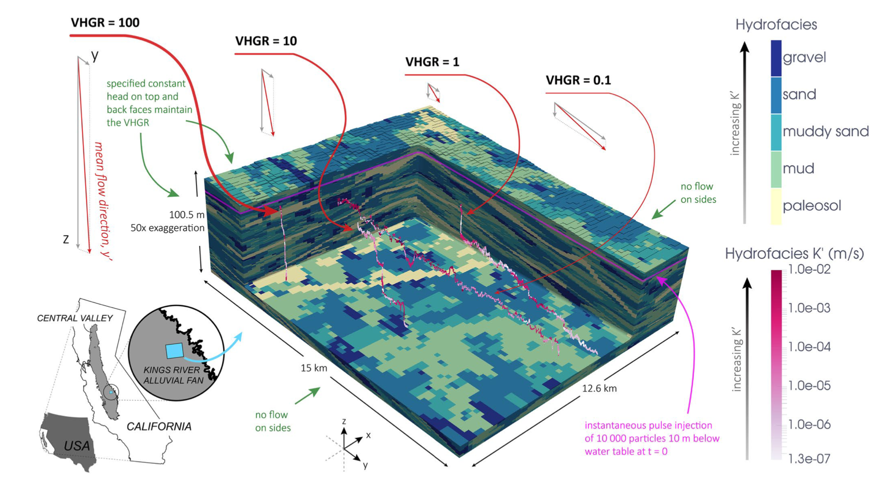
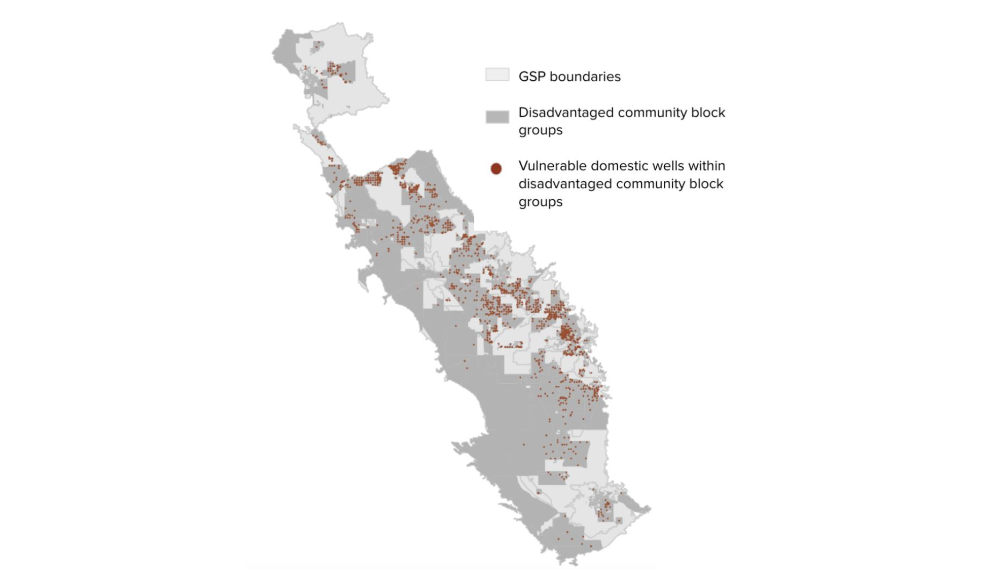
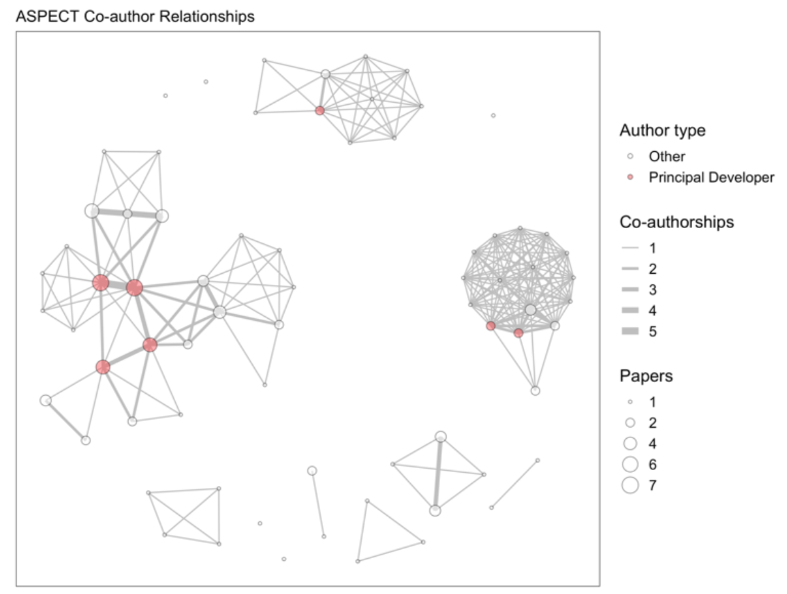

Publications
María G. Castrellón, Rich Pauloo, Ioana Popescu, José Fábrega (2023). ONASP: A web application for groundwater data visualization in Panama. 14th International Conference on Hydroinformatics.

Zhilin Guo, Graham E. Fogg, Rich Pauloo, Chunmiao Zheng (2022). Sustainability of Regional Groundwater Quality in Response to Managed Aquifer Recharge. WRR.
Aakash Ahamed, Rosemary Knight, Sarfaraz Alam, Rich Pauloo, Forrest Melton (2022). Assessing the utility of remote sensing data to accurately estimate changes in groundwater storage. STOTEN.

Rich Pauloo, Graham E. Fogg, Zhilin Guo, Christopher V. Henri (2021). Hydraulic Gradients Modulate Non-Fickian Transport in Heterogeneous Porous Media. WRR.


Rich Pauloo and Alvar Escriva-Bou (2021). How Better Data Can Help California Avoid a Drinking Water Crisis. Public Policy Institute of California.
Rich Pauloo, Graham E. Fogg, Thomas Harter, Zhilin Guo (2020). Anthropogenic Basin Closure and Groundwater Salinization (ABCSAL). JoH.

Andrew Calderwood, Rich Pauloo, PhD, Graham E. Fogg (2020). Low-Cost, Open Source Wireless Sensor Network for Real-Time, Scalable Groundwater Monitoring. Water.

Rich Pauloo, Graham E. Fogg, Helen Dahlke, Alvar Escriva-Bou, Amanda Fencl, Hervé Guillon (2020). Domestic Well Vulnerability to Drought Duration and Unsustainable Groundwater Management in California’s Central Valley. ERL.

Darcy Bostic, Kristin Dobbin, Rich Pauloo, Jessica Mendoza, Michael Kuo, and Jonathan London (2020). Sustainable for Whom? The Impact of Groundwater Sustainability Plans on Domestic Wells. Pacific Institute.

Lorraine J. Hwang, Rich Pauloo, Jane Carlen (2020). Assessing Impact of Outreach through Software Citation for Community Software in Geodynamics. IEEE.

- Posted on:
- January 1, 0001
- Length:
- 2 minute read, 254 words
- See Also: